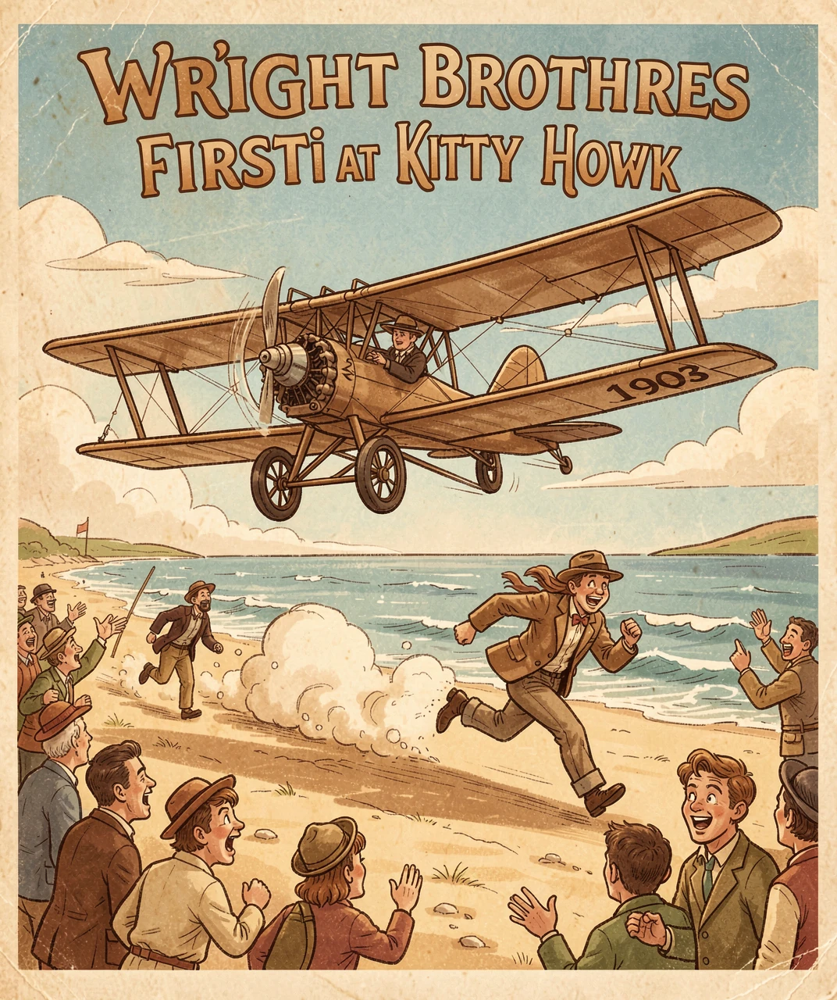
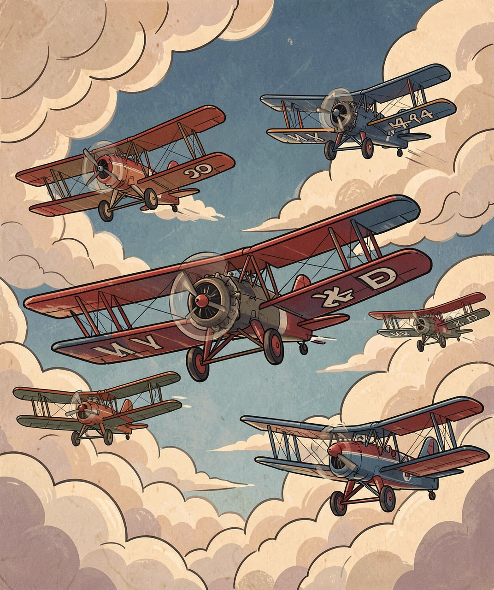
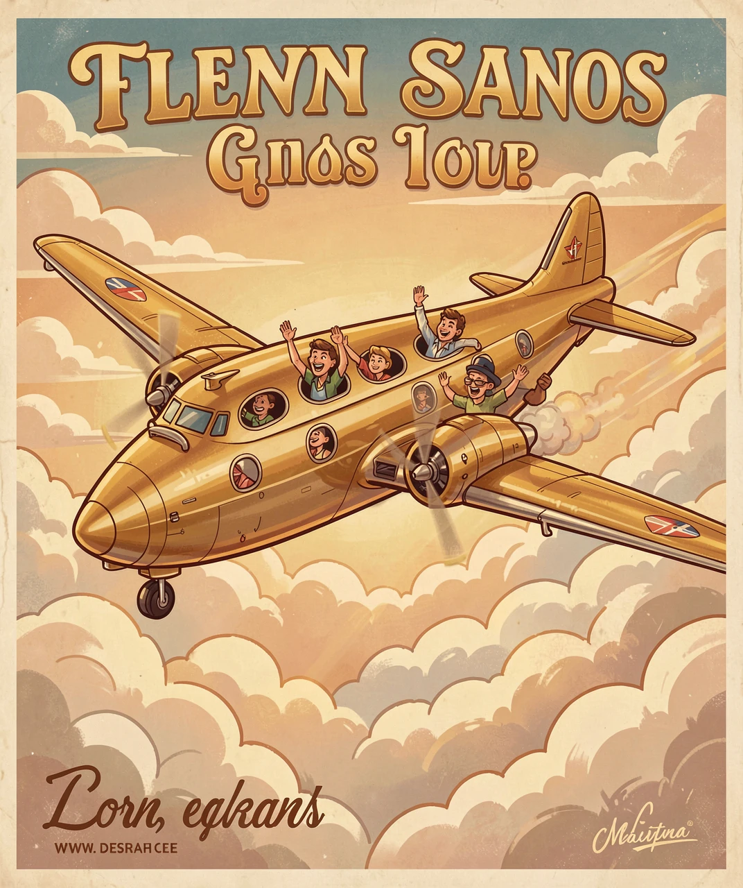
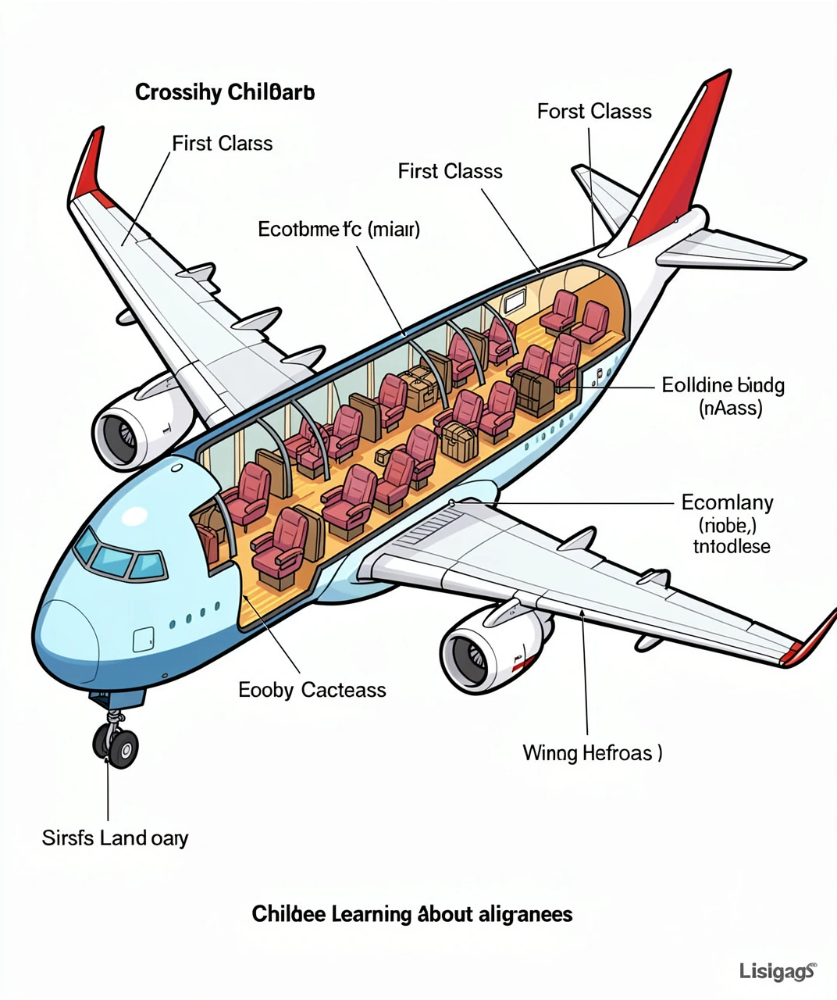
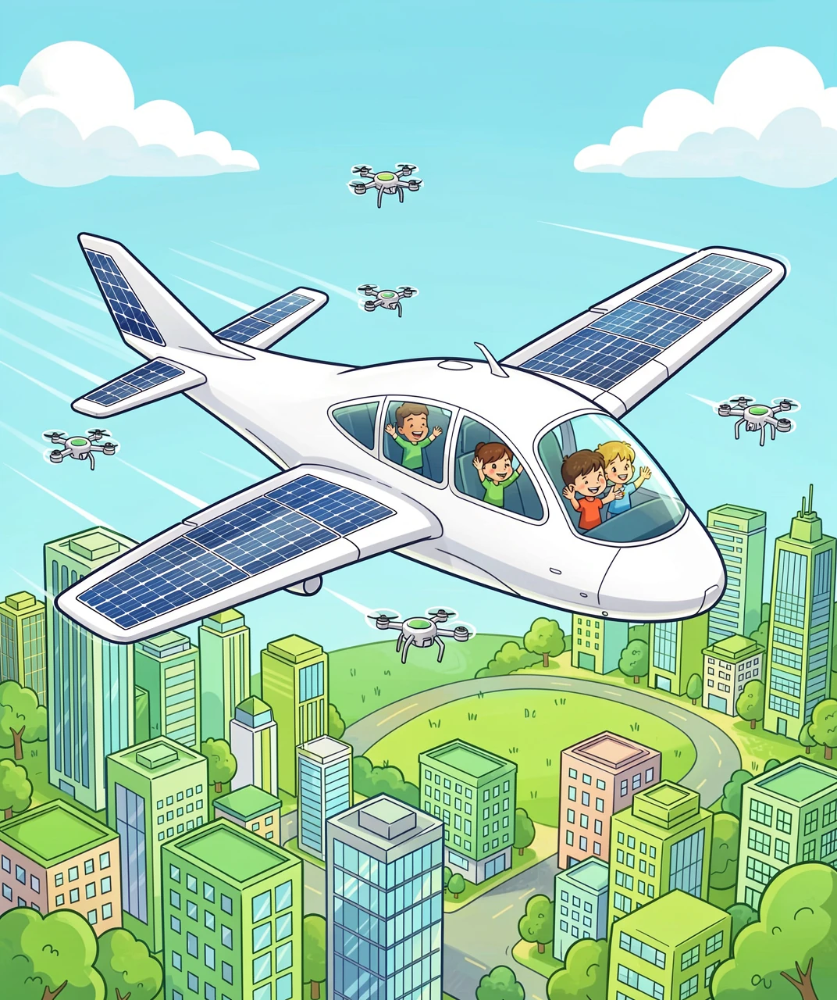

从梦想飞行到征服蓝天的120年奇迹
人类想飞上天的梦想，比有文字记载的历史还要古老！古希腊神话中，伊卡洛斯用蜡和羽毛做翅膀飞上天空，可惜飞得太靠近太阳，翅膀融化了，他掉进了大海。中国古代也有"万户飞天"的传说——一个叫万户的人把47支烟花绑在椅子上，想飞上天，结果……你猜到了，轰隆一声！虽然这些尝试都失败了，但人类从来没有放弃飞行的梦想。
真正让飞行从梦想变成现实的，是美国的莱特兄弟——奥维尔·莱特和威尔伯·莱特。他们不是科学家，而是俄亥俄州代顿市的自行车修理工！但正是修理自行车的经验，让他们理解了"平衡"和"控制"的重要性，这成了发明飞机的关键。

✈️ 1903年12月17日——人类第一次动力飞行！
1903年12月17日，在北卡罗来纳州基蒂霍克的沙滩上，奥维尔驾驶"飞行者一号"飞了12秒，距离36米——还不如一架大型客机的翅膀那么长！但这12秒，永远改变了人类的历史。那天他们一共飞了4次，最长的一次飞了59秒，距离260米。
莱特兄弟的飞机是"双翼机"——上下两层翅膀。早期飞机大多是这种设计，因为那时候的发动机不够强劲，需要更大的翅膀面积来产生足够的升力。两层翅膀之间用支柱和钢丝连接，看起来像一个大大的风筝框。

🛩️ 双翼机时代——上下两层翅膀的经典造型
第一次世界大战（1914-1918）是飞机发展的"加速器"。各国争相研发更快的战斗机和更大的轰炸机。战争结束时，飞机的速度已经从每小时70公里提高到了200公里！战后，大量退役飞行员和廉价飞机催生了"飞行热潮"，人们开始尝试用飞机运送邮件、乘客，甚至进行飞行表演。
二战后的飞机世界发生了一个巨大的变化——喷气式发动机取代了螺旋桨！喷气发动机的原理其实很简单：把空气吸进来，压缩后和燃料混合燃烧，然后从后面高速喷出去，强大的反推力让飞机向前飞。就像你吹气球然后松手，气球会飞走一样！

✈️ 喷气客机——让全世界变得更小了
1952年，英国de Havilland公司推出了世界第一架喷气式客机"彗星号"。但真正让喷气旅行普及的是1958年服役的波音707，它的速度达到每小时900公里，比螺旋桨飞机快了一倍！从此，坐飞机出国不再是少数人的奢侈。
1969年，更大的奇迹出现了——波音747"巨无霸"首飞！它可以载400多名乘客，双层客舱，有个标志性的"驼峰"机头。747让飞机票变得更便宜，普通人也能坐飞机出国旅行了。人们叫它"天空女王"。
2005年，空客A380诞生——世界上最大的客机！双层客舱从头到尾，最多能载853人，简直是一栋会飞的楼！但它太大了，很多机场装不下，运营成本也高，2021年就停产了。看来不是越大越好啊！
| 飞机 | 首飞年份 | 载客量 | 最高时速 |
|---|---|---|---|
| ✈️ 莱特飞行者号 | 1903 | 1人 | 48 km/h |
| 🛩️ 彗星号 | 1949 | 36人 | 800 km/h |
| ✈️ 波音707 | 1957 | 189人 | 972 km/h |
| ✈️ 波音747 | 1969 | 416人 | 988 km/h |
| ✈️ 空客A380 | 2005 | 853人 | 1020 km/h |
| ✈️ 协和号 | 1969 | 128人 | 2179 km/h |
一架现代客机看起来很大很复杂，但其实它的每个部分都有明确的功能。让我们拆开看看！

🔬 飞机的身体构造——一架会飞的精密机器！
机翼——飞机最重要的部分！不仅能产生升力，里面还藏着燃油箱（飞机的油箱不在机身里，而在翅膀里！）。机翼后缘有襟翼和副翼，可以上下摆动来控制方向，就像鸟儿调整羽毛一样。
🔥 喷气发动机——挂在机翼下方，是飞机的"心脏"。一台现代喷气发动机的推力相当于把15辆小汽车同时抛上天！进气口直径比一个人的身高还大，每秒吸入超过1吨的空气。
🧭 驾驶舱——以前需要3个人（机长、副驾驶、飞行工程师），现在只需要2个人。现代驾驶舱全是电子屏幕和电脑，飞行员更像"系统管理员"而不是"驾驶员"。
🛬 起落架——飞机的"腿"，起飞后收进机身减少阻力。一架波音777的主起落架有12个轮子！降落时轮胎瞬间加速到300公里/小时，会冒烟！
📦 货舱——在你脚下还有一层！行李、邮件、甚至活的小动物都在这里。有些货舱可以调节温度，这样小猫小狗们在旅途中也不会冷。
飞机已经走过120年，但飞行的进化还在继续！未来的飞机会是什么样子？

🚀 未来的飞机——绿色、安静、更酷！
⚡ 电动飞机——像电动汽车一样，飞机也在走向"电动化"！电动飞机用电池驱动电机，零排放、超安静。目前已经有小型电动飞机试飞成功，但电池太重，大客机还需要很多年。空客计划2035年推出混合动力客机。
🛸 翼身融合——现在的飞机都是"筒体+翅膀"的形状，但未来可能变成一个扁扁的"飞翼"——整个飞机就是一个大翅膀！这种设计能减少20%以上的空气阻力，省油又安静，乘客坐在"翅膀里面"看窗外风景，想想就很酷！
🚀 超音速回归——协和号退役20年了，但多家公司正在研发"协和2.0"！美国Boom公司设计的Overture超音速客机，速度1.7马赫（约2100km/h），用可持续燃料， quieter（更安静），计划2029年首飞。从东京到旧金山只要6小时！
🤖 无人驾驶飞机——军用无人机已经很常见了，未来的客机也可能不需要飞行员！AI可以全程自动飞行、起降。当然，初期肯定还是有飞行员坐在那里"盯着"，但也许你长大的时候，坐的飞机就是AI开的了！
🛩️ 螺旋桨飞机纪录：837 km/h（图-114，1960年）
✈️ 喷气客机纪录：1020 km/h（空客A380巡航速度）
💥 超音速客机纪录：2179 km/h（协和号，1976-2003年）
🚀 有人驾驶最快：7274 km/h（X-15火箭飞机，1967年）
从48 km/h到7274 km/h——人类只用了64年！
从莱特兄弟12秒的蹦跶，到如今每天有超过10万架航班在天上飞——人类飞行的故事告诉我们：只要有梦想和坚持，就没有到不了的远方。下一个120年，也许我们会飞得更快、更远，甚至飞出地球！那一天，别忘了这一切都从两个修自行车的兄弟开始……🚲✈️✨
💡 答案：1-B 2-B 3-A 4-D 5-C